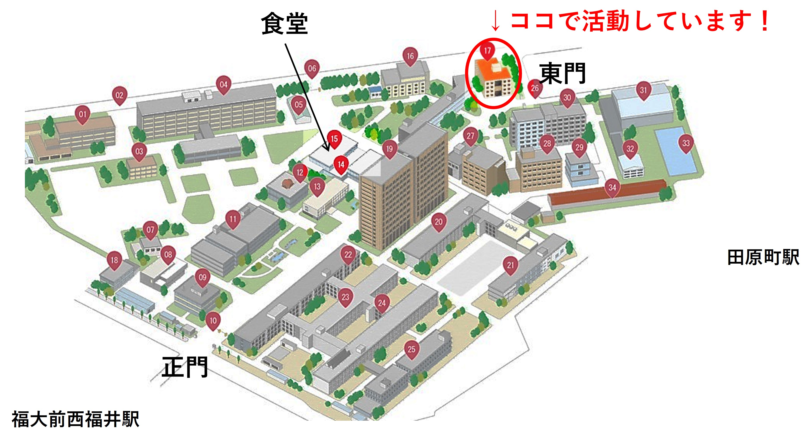
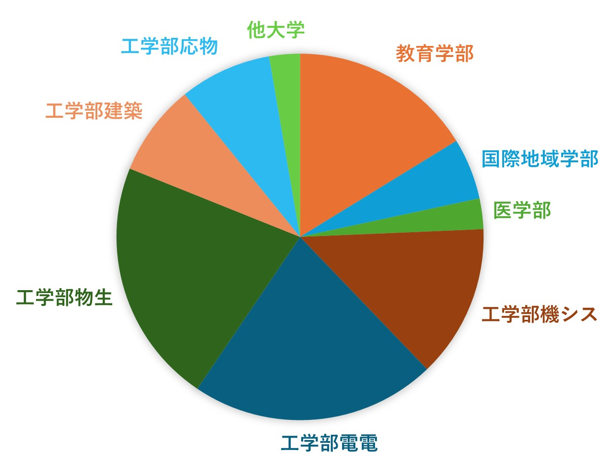

活動について

場所：課外活動棟2F・練習室
日時：月曜日 18:30～20:30
水曜日 18:30～20:30 (後期一部期間)
金曜日 16:30～19:30
土曜日 9:30～12:30
募集パート
よくある質問
Q : 男女比は？
A : 約１：１です。男女関係なく仲良しです！！！！
Q : 初心者でもいいですか？
A : 大歓迎です！団員の半数は大学から今の楽器を始めています。
吹奏楽部出身や弦楽部出身の人もいるので、初心者も経験者も楽しめる環境だと思います。
Q : 1年生じゃないけどいいですか？
A : 2年生や3年生から入団した団員もいます。安心してください。大歓迎ですよ。
Q : アルバイト、学業との両立はできますか？
A : 週4でアルバイトしながらフル単の団員もいます。人にもよりますが、成績に影響が出るほどの負担にはならないと思います。
Q : 入団に必要なものは何ですか？
A : 特にありません。持っている方はチューナーや楽譜ファイルがあると便利だと思います。
Q : 学部の分布は？
A :

学部学科、大学関係なくみんな話します。